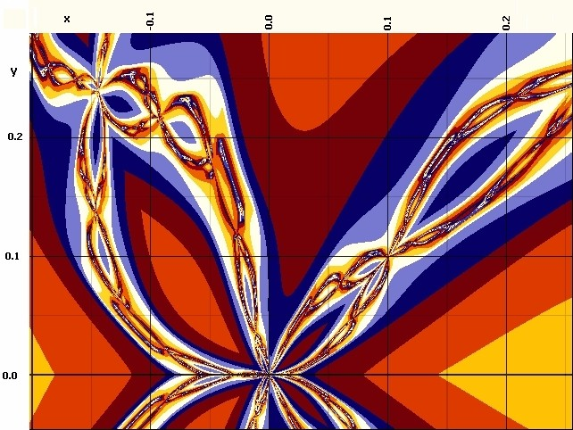

Iterationsverfolgung
Z = Z^(Z*) - 1
mit Z = x + iy und Z* = x - iy und
Start: x=Cx, y=Cy (Bildebene)

Hinweis: Dieses Bild ist nur fr Koppelfaktor = 0.01 . . Fernbild Spinne hier.
Es wurde mit der Software UltraFractal berechnet, die lngere Fliekommazahlen hat (hier JavaScript).
Der eigentliche Schdel ist grer (gleiche Formel) und wre hier zu berechnen (leider Zahlenlnge zu kurz).
Beispiele:
4 Iterationen bis Abbruch bei (0.18, 0) Farbe Gelb
5 Iterationen bis Abbruch bei (0.15, 0) Farbe Gelb
5 Iterationen bis Abbruch bei (-0.18, 0) Farbe Gelb
5 Iterationen bis Abbruch bei (0.12, 0) Farbe Orange
5 Iterationen bis Abbruch bei (0.05, 0.25) Farbe Orange
6 Iterationen bis Abbruch bei (0.1, 0.25) Farbe Braun
6 Iterationen bis Abbruch bei (0.05, 0) Farbe Braun
6 Iterationen bis Abbruch bei (-0.1, 0) Farbe Braun
7 Iterationen bis Abbruch bei (0.1, 0.2) Farbe Dunkelblau
7 Iterationen bis Abbruch bei (0.2, 0.2) Farbe Dunkelblau
8 Iterationen bis Abbruch bei (0.2, 0.275) Farbe Hellblau
9 Iterationen bis Abbruch bei (0.2, 0.25) Farbe Weiss
13Iterationen bis Abbruch bei (0.0000001, 0)
15Iterationen bis Abbruch bei (0.1, 0.1)
Hier sieht man, dass nur dnne Linien eventuell nicht-divergent sind (koppl=0, Bailout=4).
Hier eine 2390-fache Vergrerung bei (0.214387, 0.2402897)
(hier nur 23-fach), (koppl=0, Bailout=1E50).
Hier das gleiche Bild und dieselbe Stelle mit koppl=0.01
(hier nur 23-fach).
Die Stelle im 8-fach-Bild hier wieder mit Bailout=4, das Zentrum unten links ist die Null.